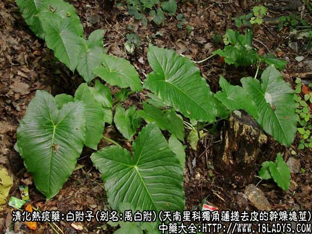
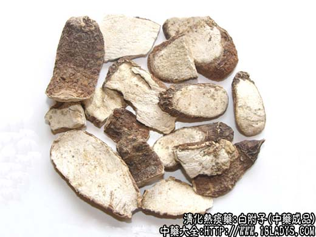
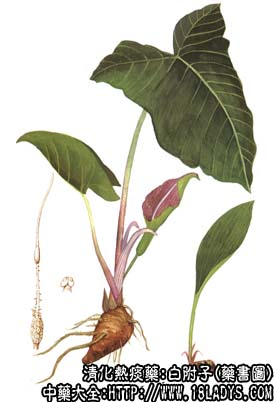

白附子为较常用中药。《名医别录》列为中品。
别名：禹白附、鸡心白附（上海）、独角莲。
来源：为天南星科多年生草本植物独角莲（禹白附）搓去外皮的干燥块茎。栽培或野生。
产地：主产于河南禹县、长葛。此外，陕西、山西、四川、湖北等地亦有生产。
性状鉴别：块茎呈不规则的椭圆形（似小芋头）。长2～4厘米，直径约1～2厘米，去净外皮者表面淡黄白色，略平滑，周身有小凸点（须根痕），表成较规律的环形圈。顶端有圆形下凹的茎痕。未去净外皮者，表面粗糙灰棕或灰黄色。多显抽皱，顶端常带有棕色茎基残留或鳞状叶。质坚实。断面白色粉质。气微、味淡、麻辣刺舌。有小毒，不宜尝试。
以个大均匀、肥壮坚实、色白粉性者为佳。
主要成分：块茎含B～固甾醇、不活性肌醇、B一固甾醇～D～葡萄糖甙。关白附含次乌头硷、关附甲、乙、丙、丁、戍素等六种生物硷。
功效与作用：祛风痰、燥寒湿。其作用可能为镇静、镇痛。
炮制：制用。（制法与南星同）
性味：辛、甘、大温。
归经：入胃经。
功能：祛风痰，镇痉。
主治：中风痰壅，口眼歪斜，偏正头痛，破伤风等症。
临床应用：1、用于中风痰壅，治脑血管意外后口眼歪斜，半身不遂，常配僵蚕和全蝎，方如牵正散。
2、用于痰厥头痛（头痛而有风痰或寒痰、湿痰表现者），冶偏头痛和感冒所致的头能，常配白芷、天麻、胆南星、首乌、当归、生姜等水煎服。
3、外用治汗斑，以白附子末适量，加雄黄少许，用姜汁和调，擦患部，一日数次，擦后晒大阳，促进色素恢复。
附：附子有黑白之分。黑附子（乌附）即平日所称附子，味辛，性大热，专逐中下焦寒湿。而白附子味辛性湿，长于逐上焦寒湿，去风痰而止头痛，其性远不及黑附子之刚猛。
用量：3～9g。
处方举例：牵正散（杨氏藏方）：制白附6g，僵蚕4.5g，全蝎3g，水煎服。
注：东北另产一种关白附，为毛莨科黄花乌头的块根，东北、华东地区习用。本口形似小草乌，含乌头碱，有大毒。按科属及成分应归纳在草乌一类之中，不宜混同禹白附使用。